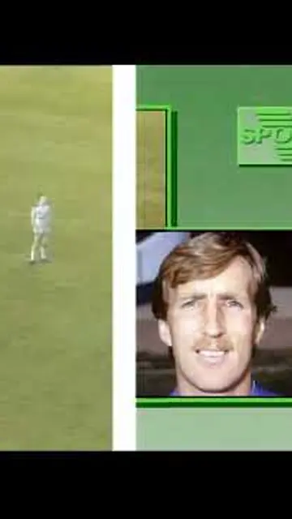
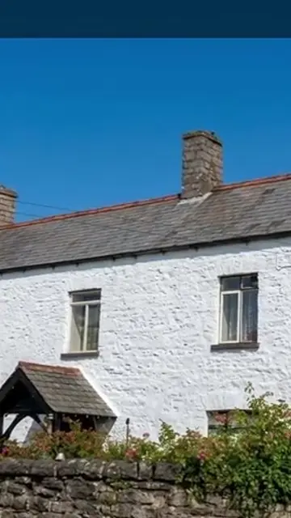
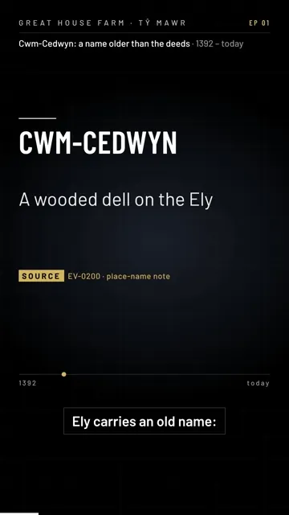
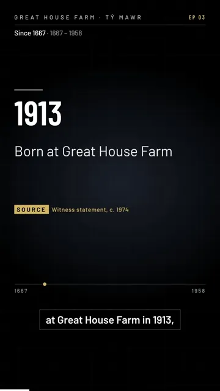
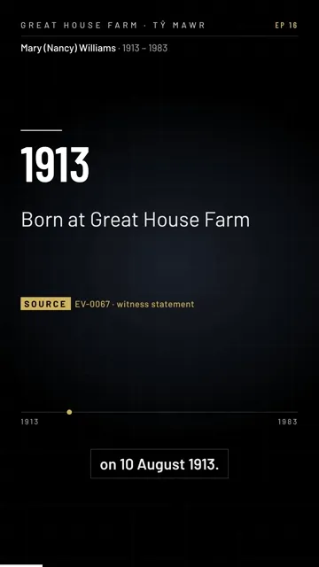
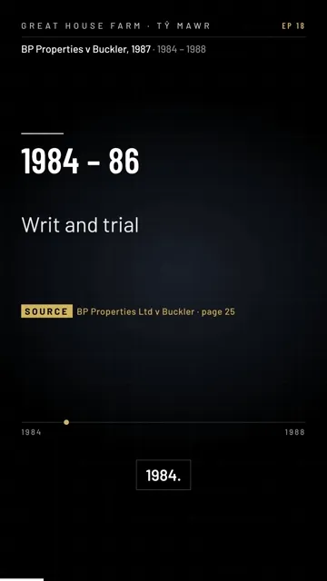
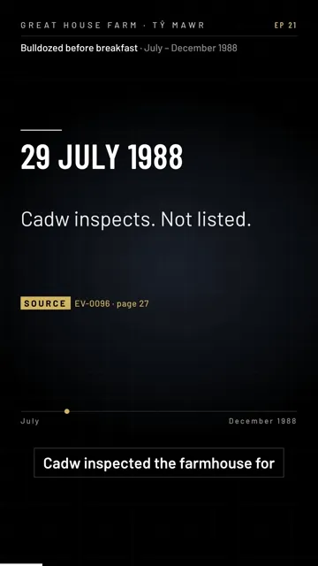

Videos
Tap a card to watch it as a story. ITV Wales’s report plays from the public viewing copy; the archive’s own films play from the Wayback Vault.
Great House Farm, 1988 reportITV Cymru Wales copy of HTV Wales news material, 1988 (Legal Wiki EV-0083). Embedded from the public viewing copy, as on the Legal Wiki homepage.

Wales at Six (Wales Broadcast Archive), from 19:48Wales Broadcast Archive (Archif Ddarlledu Cymru) copy of ITV Wales’s ‘Wales at Six’. Embedded from the archive’s public copy, as on the Legal Wiki homepage; it starts at 19:48.

Our case film (5½ min)Made for the family archive, 19 Oct 2026 (Wayback Vault). Our case, prospective. Not a finding of any court.

Cwm-Cedwyn: a name older than the deedsShort 1 of 26, made for the family archive (Wayback Vault). Sources named on screen: EV-0200, EV-0198, EV-0001, EV-0195.

Since 1667Short 3 of 26, made for the family archive (Wayback Vault). Sources named on screen: Mary (Nancy) Williams’s statement (c. 1974); Western Mail, 20 Nov 1958, p.7 (EV-0037).

Mary (Nancy) Williams, 1913–1983Short 16 of 26, made for the family archive (Wayback Vault). Sources named on screen: EV-0067; Western Mail, 5 Aug 1936, p.10 (EV-0230).

BP Properties v Buckler, 1987Short 18 of 26, made for the family archive (Wayback Vault). Sources named on screen: the Court of Appeal judgment (Legal Wiki page 25); EV-0080; EV-0078. Our case, prospective. Not a finding of any court.

Bulldozed before breakfast, December 1988Short 21 of 26, made for the family archive (Wayback Vault). Sources named on screen: Legal Wiki page 27; EV-0096; GHF-E090-N10, N11, N14.